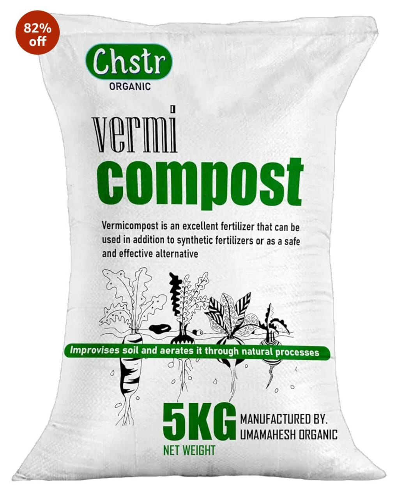
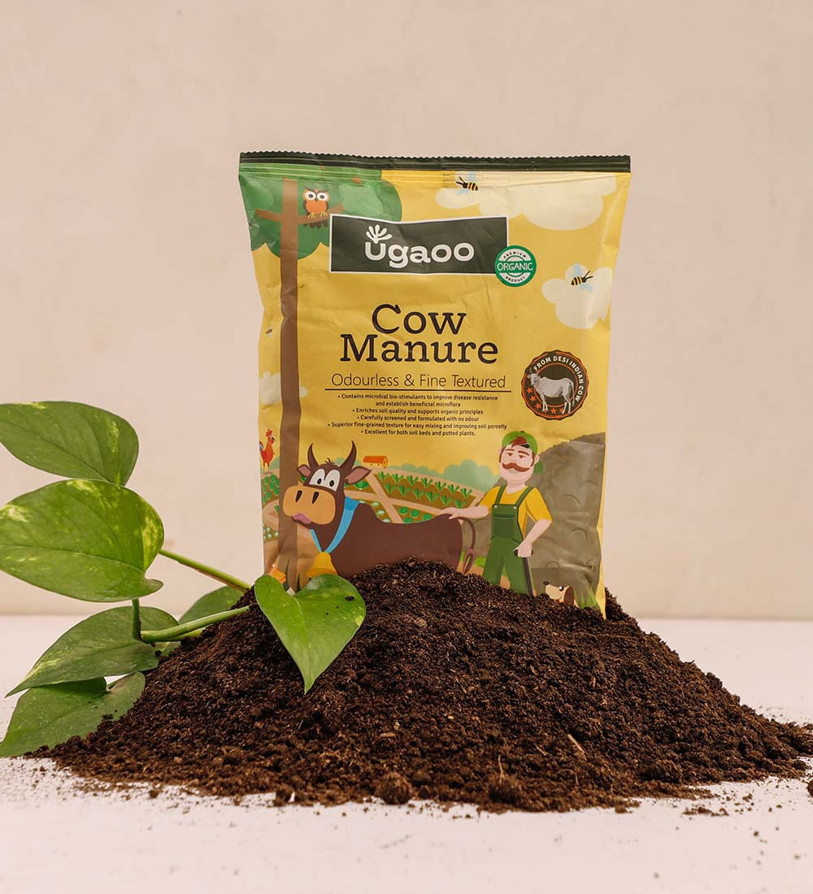
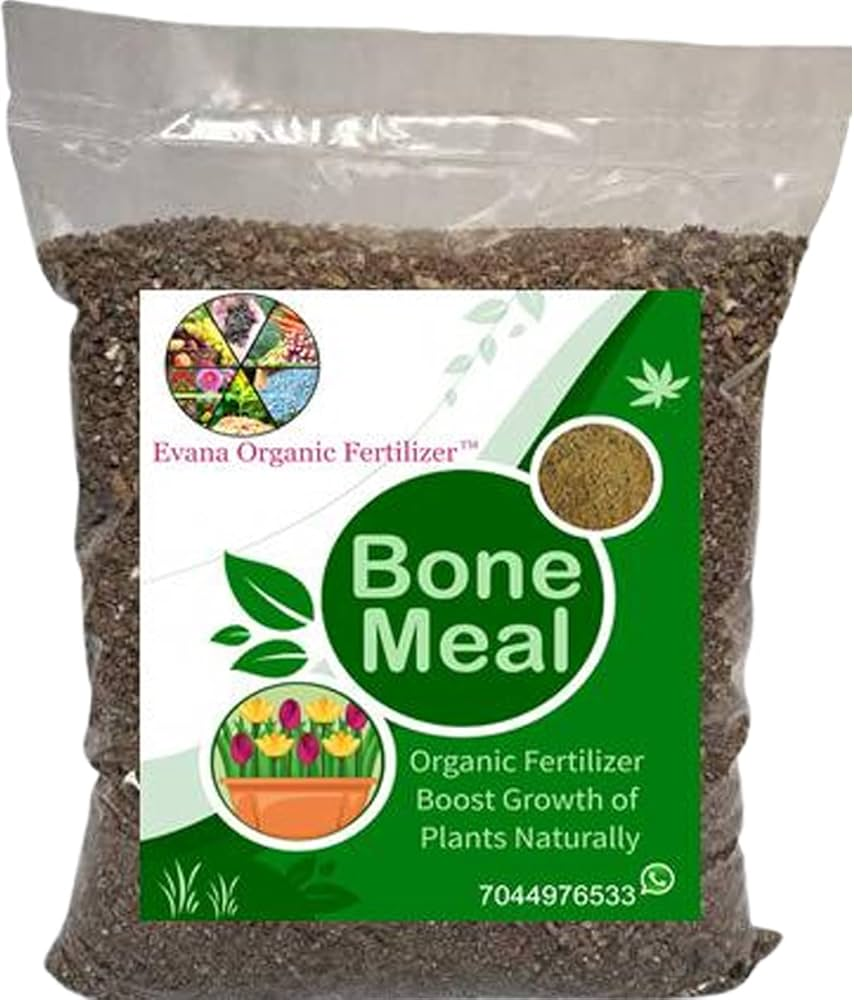
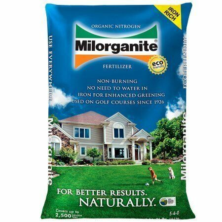
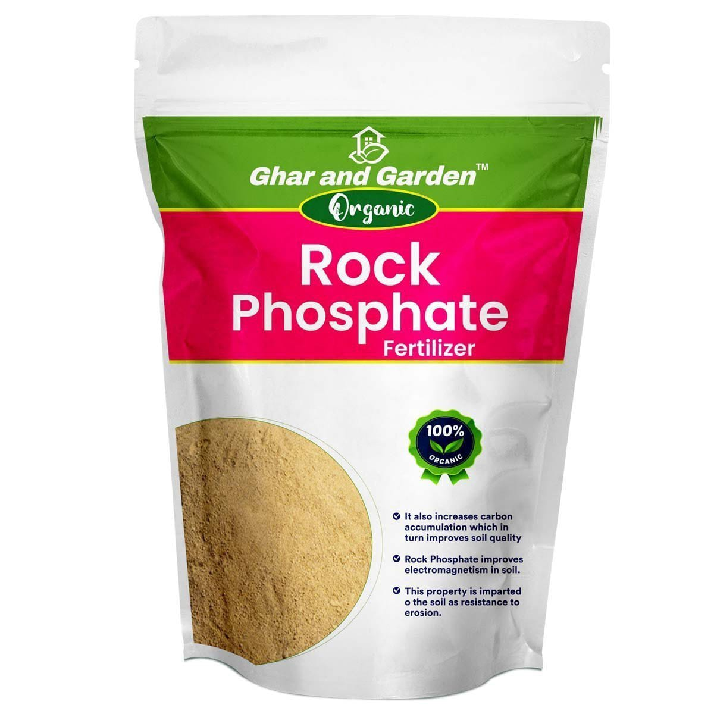
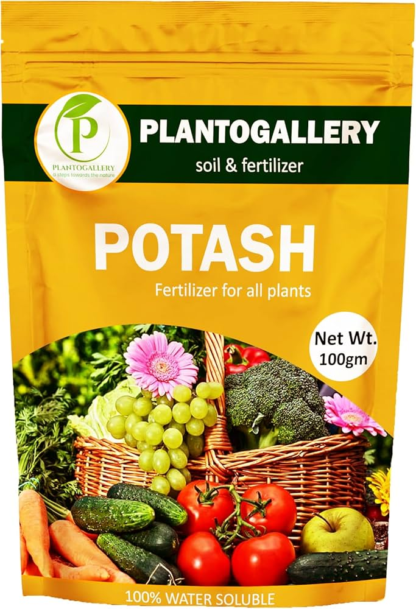
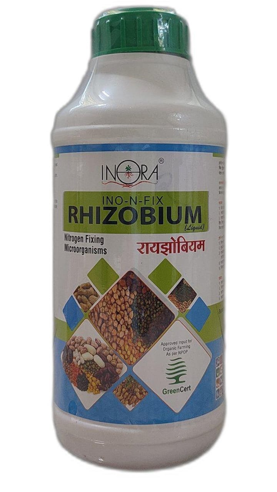
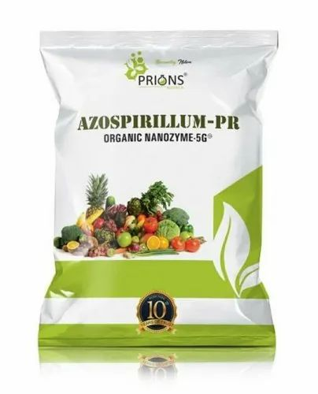
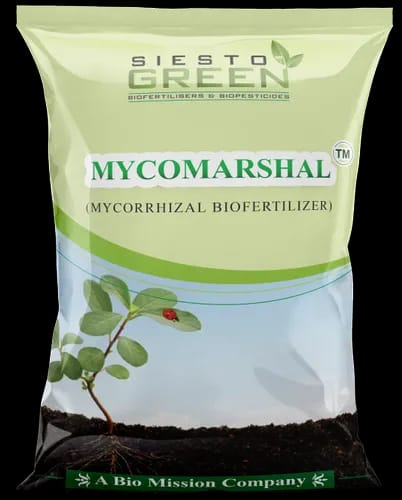

Types of Fertilizers
Fertilizers play a crucial role in modern agriculture by providing essential nutrients to crops. Here, we will explore various types of fertilizers, their uses, benefits, images, and prices.
Organic Fertilizers
Organic fertilizers are derived from natural sources such as compost, manure, and bone meal. They improve soil structure, increase microbial activity, and provide a slow release of nutrients.
-
Compost: A mixture of decomposed organic matter
used to enrich soil.

Price: ₹500 per bag -
Manure: Animal waste used to fertilize land.

Price: ₹300 per bag -
Bone Meal: A mixture of finely and coarsely
ground animal bones used as an organic fertilizer.

Price: ₹450 per bag
Chemical Fertilizers
Chemical fertilizers are synthetically produced and contain specific ratios of nutrients. They offer precise nutrient control and quick availability to plants. Common types include nitrogen, phosphorus, and potassium fertilizers.
-
Nitrogen Fertilizers: Promote leafy growth and
overall plant development.

Price: ₹600 per bag -
Phosphorus Fertilizers: Aid in root development
and flowering.

Price: ₹700 per bag -
Potassium Fertilizers: Enhance the plant’s
ability to resist disease and improve fruit quality.

Price: ₹650 per bag
Biofertilizers
Biofertilizers contain beneficial microorganisms that enhance nutrient availability and promote healthy plant growth. They help in nitrogen fixation, phosphorus solubilization, and organic matter decomposition.
-
Rhizobium: Bacteria that fix nitrogen in
leguminous plants.

Price: ₹400 per bag -
Azospirillum: A group of nitrogen-fixing bacteria
that benefit a variety of crops.

Price: ₹350 per bag -
Mycorrhiza: Fungi that form a symbiotic
association with plant roots to enhance nutrient and water
absorption.

Price: ₹500 per bag
For personalized fertilization recommendations and expert advice, please contact our support team at support@agroconnect.com.